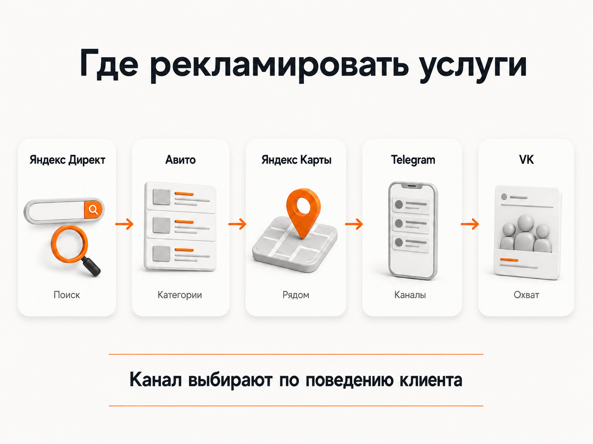
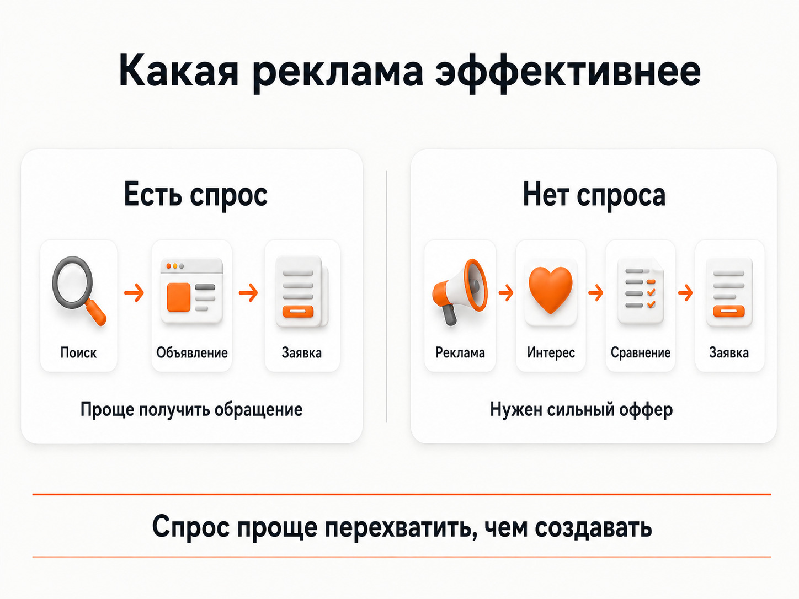
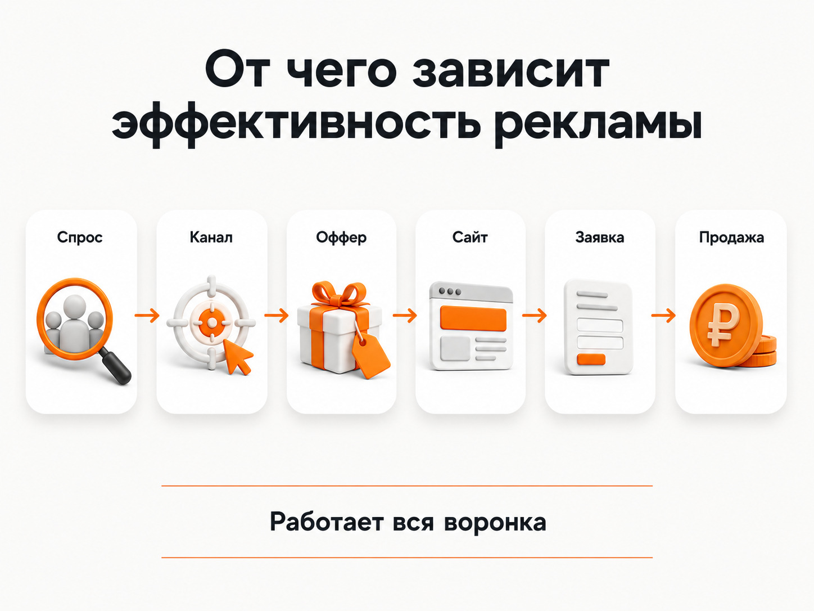

Блог о платном трафике
Реклама услуг в интернете: где рекламировать услуги и какой канал выбрать
Description: Где рекламировать услуги в интернете в 2026 году. Сравнение Яндекс Директа, Авито, Telegram Ads, VK Рекламы и Яндекс Карт. Как выбрать канал под свой бизнес и оценить его эффективность.
Если нужно рекламировать услуги в интернете в России, я бы в большинстве случаев начинал с Яндекс Директа. Причина простая: там можно работать с уже сформированным спросом и показывать рекламу человеку в тот момент, когда он сам ищет нужную услугу.
Но универсального ответа нет. Для ремонта квартир хорошо может работать Авито, для локальной стоматологии - поиск Яндекса и Карты, для онлайн-курсов - Яндекс Директ и Telegram, а некоторые массовые B2C-услуги можно тестировать через VK Рекламу.
Главный принцип такой: сначала нужно понять, где люди уже ищут конкретно вашу услугу. И только потом выбирать рекламную площадку.
| Канал | Когда я бы его рассматривал |
|---|---|
| Яндекс Директ | Услугу ищут через поиск |
| Авито | Под услугу есть активная категория и спрос внутри Авито |
| Яндекс Карты | Клиент выбирает компанию рядом с собой |
| Telegram Ads | Есть подходящие каналы, боты или поисковые запросы внутри Telegram |
| VK Реклама | Массовая B2C-аудитория, которую можно заинтересовать рекламой |
| Реклама у блогеров и в каналах | Нужны доверие, охват или знакомство с услугой |
В 2026 году именно Яндекс, VK, Telegram и Авито остаются среди основных рекламных площадок, доступных российскому бизнесу. При этом механика привлечения клиента у них совершенно разная.

Какая реклама самая эффективная для услуг
Самая эффективная реклама для бизнеса - не та, которая сейчас популярнее, а та, которая позволяет дешевле получать нужный конечный результат.
Для сферы услуг я в первую очередь разделяю каналы на две группы.
Первая - работа со сформированным спросом. Человек уже понимает свою проблему и самостоятельно ищет исполнителя. Например:
- «установить кондиционер»;
- «стоматология рядом»;
- «юрист по банкротству»;
- «ремонт холодильника»;
- «настроить Яндекс Директ».
Такого клиента проще всего перехватывать через поиск Яндекса, Карты или площадки вроде Авито, если он действительно привык искать такую услугу там.
Вторая группа - реклама людям, которые прямо сейчас ничего не ищут. Это VK, часть РСЯ, Telegram-каналы, блогеры, медийная реклама. Здесь сначала приходится привлечь внимание человека, объяснить предложение и только после этого получить заявку.
Чем меньше сформирован спрос, тем сильнее результат зависит от оффера, креатива, репутации компании и качества посадочной страницы.
Поэтому вопрос «какая реклама сейчас самая эффективная» сам по себе поставлен неправильно. Сначала нужно понять, как клиент выбирает именно вашу услугу.

Яндекс Директ - основной канал для большинства услуг
Если люди уже вводят название вашей услуги в поиск, Яндекс Директ обычно является первым каналом, который я бы проверял.
Сейчас через Директ можно размещаться в Поиске, Рекламной сети Яндекса и Картах. В Единой перфоманс-кампании эти места размещения можно разделять, а стратегии могут оптимизироваться под клики, конверсии или другие цели бизнеса.
Главное преимущество поиска - намерение пользователя.
Человек сам написал:
ремонт стиральных машин ростов
или:
бухгалтерское обслуживание ип
Ему не приходится сначала объяснять, зачем вообще нужна эта услуга. Задача рекламы - попасть в подходящий запрос и убедить пользователя выбрать конкретное предложение.
Но само наличие спроса еще ничего не гарантирует.
В конкурентных нишах цена трафика может быть высокой. Поэтому от бизнеса тоже требуется нормальная подготовка:
- понятное предложение;
- конкурентная цена или другое преимущество;
- нормальный сайт;
- примеры работ, кейсы или отзывы;
- удобная форма обращения;
- быстрая обработка заявок;
- корректно настроенная аналитика.
Автоматические стратегии Директа используют данные о целевых действиях для поиска пользователей, которые с большей вероятностью совершат нужную конверсию. Если передавать системе нормальные данные о заявках и продажах, возможностей для оптимизации становится больше.
Но алгоритм не исправит плохое предложение.
Если конкурент предлагает понятную услугу за 30 000 рублей, показывает реальные работы и объясняет сроки, а у вас на сайте написано только «индивидуальный подход и высокое качество», одной настройкой рекламы эту разницу не компенсировать.
Внутренняя ссылка: статья «Как работает Яндекс Директ».
Внутренняя ссылка: статья «Как настроить рекламу в Яндекс Директ в 2026 году».
Для сложных корпоративных услуг здесь также уместна ссылка на материал про Яндекс Директ для B2B.
Когда стоит рекламировать услуги на Авито
Авито я бы рассматривал только после одного простого теста: нужно проверить, ищут ли там вашу услугу.
Если под направление существует нормальная категория, внутри нее много предложений, объявления получают просмотры, а конкуренты давно работают на площадке - канал как минимум стоит протестировать.
Типичные примеры:
- ремонт;
- перевозки;
- строительство;
- бытовые услуги;
- клининг;
- мастера;
- фотографы;
- обучение;
- часть профессиональных услуг.
Здесь человек уже находится внутри площадки и выбирает исполнителя. Хорошее объявление, фотографии, отзывы, рейтинг, цена и скорость ответа напрямую влияют на решение.
Совсем другая ситуация - узкий бизнес-консалтинг или специфическая промышленная услуга, которую потенциальный клиент практически никогда не ищет через Авито. Формально показать ему рекламу можно. Практический смысл такого запуска значительно ниже.
В августе 2026 года возможности отдельной платформы «Авито Реклама» расширились: появился таргетинг по поисковым запросам пользователей внутри Авито. То есть рекламодатель может формировать аудиторию на основе того, что люди искали на площадке.
Но это не отменяет основного правила.
Если ваша потенциальная аудитория практически не использует Авито для решения конкретной задачи, я бы не пытался искусственно делать площадку основным каналом привлечения.
Сначала проверяется спрос внутри Авито. Потом принимается решение о тесте.
Внутренняя ссылка: статья «Авито или Яндекс Директ».
Яндекс Карты - отдельный канал для локальных услуг
Для части бизнеса вопрос «где лучше рекламировать услуги» вообще нельзя рассматривать без геосервисов.
Карты особенно важны, если человек выбирает исполнителя по местоположению:
- стоматология;
- медицинская клиника;
- салон красоты;
- автосервис;
- фитнес;
- ремонт;
- ресторан;
- образовательный центр;
- различные услуги рядом с домом или работой.
В Яндекс Картах можно подключить продвижение организации. Компания получает возможность подниматься в результатах поиска Карт и Навигатора по целевым запросам.
Для услуг Яндекс также развивает отдельную галерею над поисковой выдачей. В ней могут размещаться организации и частные специалисты из ремонта, строительства, красоты, юридических услуг, спорта, дизайна и ряда других направлений.
Для локального бизнеса я бы поэтому проверял не только обычную поисковую кампанию, но и присутствие компании в Картах: заполненность профиля, фотографии, отзывы, рейтинг и возможности платного продвижения.
Telegram Ads - подходит далеко не каждой услуге
Telegram интересен большой аудиторией, но я бы не воспринимал его как универсальную замену Яндекс Директу.
Сначала нужно ответить на вопрос: где именно внутри Telegram находится ваша аудитория?
Официальная рекламная платформа позволяет показывать рекламу в публичных каналах, а Telegram также использует рекламу в ботах, историях и публичном поиске. При подборе рекламы могут учитываться тематика каналов и поисковые запросы. Содержимое личных переписок для рекламного таргетинга не используется.
Это дает несколько рабочих сценариев.
Например, курсы по профессии менеджера маркетплейсов потенциально можно рекламировать по тематике работы, образования и заработка. Пользователь может искать подобную информацию непосредственно внутри Telegram.
А вот узкую услугу промышленного аудита предприятия человек в глобальном поиске Telegram, скорее всего, искать не будет. Здесь приходится искать подходящие тематические каналы или использовать совсем другую воронку.
Есть и финансовый порог входа. При запуске через посредника к рекламному бюджету добавляются комиссия и налоги, поэтому небольшой бизнес должен заранее оценить экономику теста.
Кроме официальной рекламы остаются прямые размещения и посевы в тематических Telegram-каналах. Для сложных услуг они иногда интереснее Telegram Ads, потому что позволяют подробно объяснить предложение и использовать доверие аудитории к автору канала.
VK Реклама - я бы не ставил ее первым каналом
VK обладает большой аудиторией и продолжает развивать рекламные алгоритмы.
Но если речь идет именно о получении заявок на услуги, я бы для большинства проектов не начинал с VK.
Причина в самой механике.
На поиске человек говорит системе: «мне сейчас нужен адвокат».
В VK мы пытаемся сами определить, кто потенциально может заинтересоваться услугой, и прерываем рекламой просмотр контента.
По моему опыту, для многих услуг такой трафик оказывается значительно менее предсказуемым. Можно получать клики и даже недорогие лиды, но качество обращений бывает значительно хуже, чем кажется по рекламному кабинету.
Это не означает, что VK Реклама не работает вообще.
Я бы тестировал ее, когда:
- услуга рассчитана на широкую B2C-аудиторию;
- ее легко объяснить одним креативом;
- есть сильный визуальный контент;
- спрос можно сформировать;
- есть большой объем потенциальной аудитории;
- бизнес готов регулярно тестировать объявления и предложения.
Например, массовое обучение, мероприятия, фитнес, красота, часть медицинских направлений или развлекательные услуги выглядят для такого теста логичнее, чем сложный B2B-консалтинг.
Реклама в Telegram-каналах и у блогеров
Для дорогих и сложных услуг одной короткой рекламы иногда недостаточно.
Человек хочет понять:
- кто оказывает услугу;
- почему этому специалисту можно доверять;
- как строится работа;
- какие результаты он уже получал;
- почему предложение стоит своих денег.
Здесь могут работать тематические Telegram-каналы, блогеры, авторские сообщества и другие нативные размещения.
Их преимущество - возможность получить рекомендацию внутри уже существующей аудитории.
Минус - значительно меньшая предсказуемость.
Поиск Яндекса можно постепенно оптимизировать по сотням или тысячам переходов. Покупка одного рекламного поста в канале может дать отличный результат, а следующий похожий канал - почти ничего.
Поэтому такие размещения я бы рассматривал как отдельное тестовое направление, а не как гарантированный источник заявок.
Где рекламировать бизнес: простой алгоритм выбора
Я бы выбирал канал в таком порядке.
1. Проверить сформированный спрос в Яндексе
Если люди регулярно ищут услугу, сначала оцениваем Яндекс Директ.
Нужно посмотреть поисковые запросы, примерный объем спроса, конкурентов и стоимость трафика.
Внутренняя ссылка: статья про прогноз бюджета Яндекс Директ.
2. Проверить Авито
Открываем нужный регион и смотрим, существует ли нормальный рынок этой услуги внутри площадки.
Если десятки компаний активно конкурируют, объявления получают отзывы и площадка явно используется клиентами - есть смысл тестировать.
Если даже подходящей категории практически нет, переходить к рекламе только потому, что «на Авито много людей», я бы не стал.
3. Для локальных услуг проверить Карты
Если клиент физически приезжает в офис, клинику, салон или сервис, Карты могут оказаться одним из важнейших источников обращений.
4. Посмотреть Telegram
Есть ли тематические каналы?
Есть ли боты, которыми пользуется нужная аудитория?
Может ли человек искать такую услугу через поиск Telegram?
Если нормальных точек контакта нет, запуск становится сомнительным.
5. После этого тестировать VK
VK имеет смысл добавлять, когда сформированный спрос уже выбран либо когда продукт хорошо подходит под модель привлечения холодной аудитории.
Не нужно сразу делить небольшой рекламный бюджет между пятью системами.
Лучше нормально протестировать один перспективный канал, получить статистику и только потом переходить к следующему.

Почему рекламная площадка - только половина результата
Одна из самых распространенных ошибок бизнеса - искать проблему исключительно в рекламном канале.
Запустили Яндекс - дорого.
Запустили VK - лиды плохие.
Попробовали Авито - мало обращений.
После этого начинается бесконечный поиск «самой эффективной рекламы».
Но итоговый результат складывается как минимум из нескольких частей:
спрос -> рекламная площадка -> аудитория -> оффер -> посадочная страница -> заявка -> обработка -> продажа
Если предложение заметно хуже конкурентов, реклама просто быстрее покажет эту проблему.
Если сайт неудобный, люди будут переходить и уходить.
Если менеджер звонит по заявке через два дня, проблема находится уже не в рекламной системе.
Если половина лидов нецелевые, нужно разбираться, кого именно приводит реклама и на какую цель оптимизируются алгоритмы.
Поэтому перед тем как разместить рекламу услуг в интернете, я бы проверил не только площадки, но и саму готовность бизнеса принимать этот трафик.
Как понять, какой канал оказался эффективнее
Сравнивать рекламные системы по количеству кликов нельзя.
Даже стоимость заявки не всегда дает правильный ответ.
Допустим:
| Канал | Заявок | Цена заявки | Продаж |
|---|---|---|---|
| Канал А | 50 | 1 000 ₽ | 2 |
| Канал Б | 20 | 2 000 ₽ | 8 |
По CPL первый канал кажется в два раза лучше.
По факту бизнес получил в четыре раза меньше клиентов.
Поэтому я смотрю дальше рекламного кабинета:
- стоимость заявки;
- долю целевых обращений;
- стоимость квалифицированного лида;
- конверсию в продажу;
- стоимость клиента;
- выручку;
- ДРР;
- ROAS;
- ROI.
Внутренние ссылки: статьи про CPA, CPS, ROAS, ДРР и ROI.
Если связать рекламу с CRM и реальными продажами, иногда выясняется, что самый дорогой по кликам канал оказался самым выгодным для бизнеса.
Какой канал выбрать в итоге
Для большинства компаний в сфере услуг мой порядок проверки выглядит так:
Яндекс Директ -> Авито, если там есть ваш спрос -> Яндекс Карты для локального бизнеса -> Telegram, если там есть подходящая аудитория -> VK Реклама как отдельный тест.
Это не универсальный рейтинг рекламных площадок.
Если услугу активно ищут на Авито, Авито вполне может оказаться первым каналом. Если бизнес полностью локальный, очень важными станут Карты. Если продукт связан с Telegram и аудитория постоянно находится в тематических каналах, логично активнее тестировать Telegram Ads и посевы.
Но выбирать площадку нужно не по размеру ее аудитории.
Сначала найдите место, где находится человек с нужной вам потребностью. Потом оцените, сколько стоит его привлечение и превращается ли он в реального клиента.
Именно это в конечном счете определяет, какая реклама наиболее эффективна для конкретного бизнеса.
Внутренняя ссылка: главная страница с услугами и кейсами.